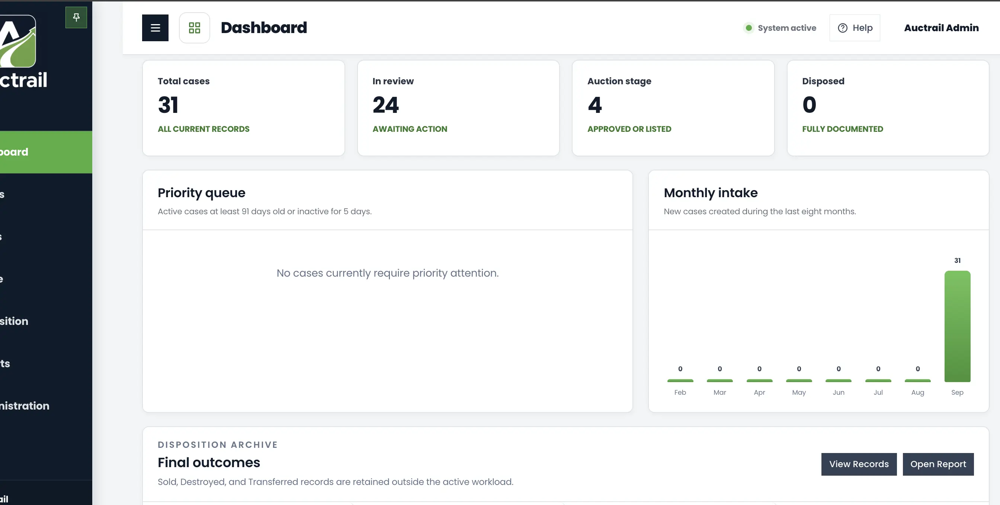

Understand your Dashboard
The Dashboard gives you a quick picture of your organization’s current work. Use it to see what needs attention and move to another part of Auctrail.
Before you start
Sign in to Auctrail. The Dashboard is normally the first page you see. If you are somewhere else, select Dashboard from the menu on the left.

What the numbers mean
All current case records that have not been moved into completed history.
Cases that are waiting for someone to review the information or take the next step.
Cases that have been approved for auction or are already listed.
Property that has reached a completed result and has been fully documented.
Use the Dashboard
Check the totals
Look at the four boxes across the top. They show how much work is in each stage.
Review the Priority queue
This area points out older cases or cases that have not had recent activity. If the area is empty, no case currently meets the priority rules.
Look at Monthly intake
The chart shows how many new cases were created each month. Use it to see whether intake is rising or slowing down.
Open the work you need
Select an item from the menu on the left. Choose Assets for property records, Cases for active work, Disposition for results, or Reports for summaries and downloads.